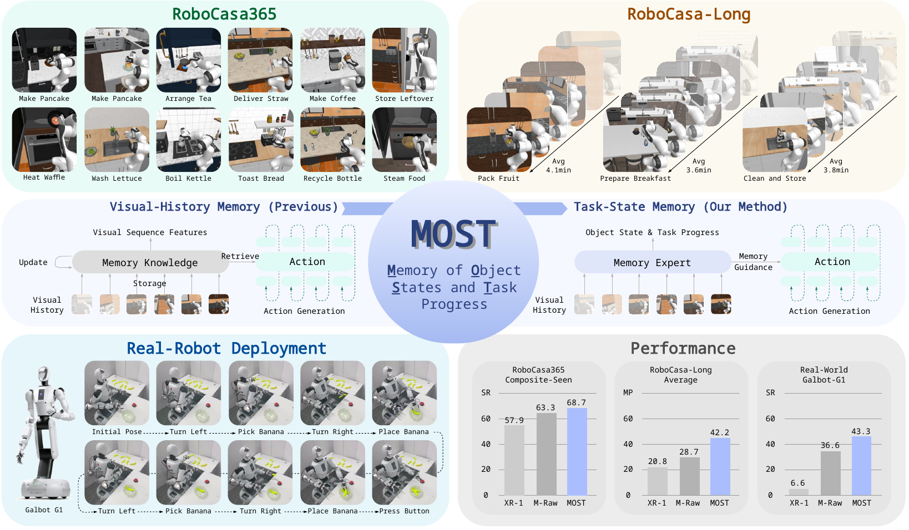
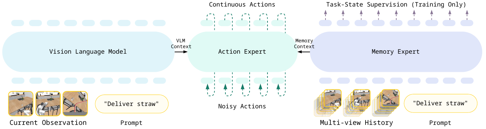
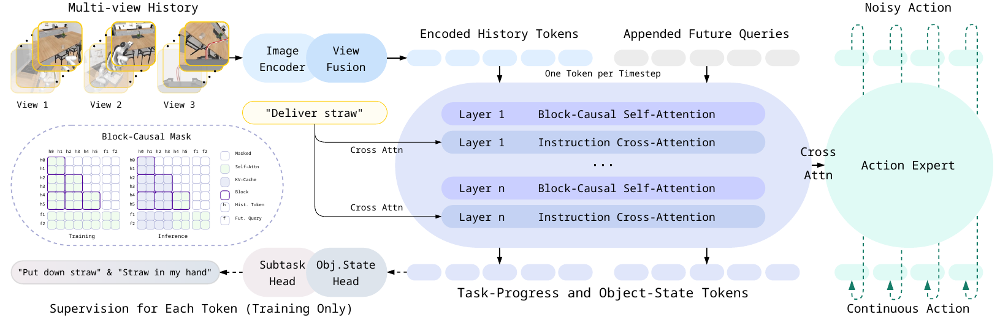
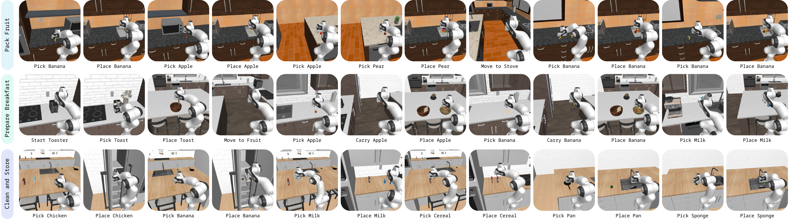
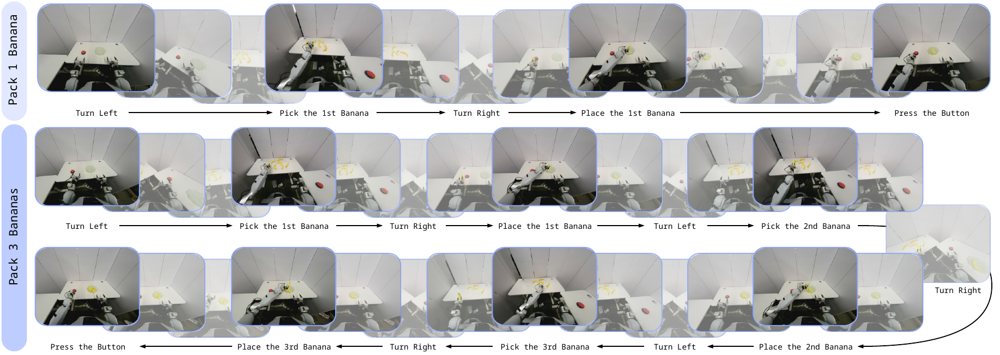

Long-horizon embodied manipulation requires policies to act on information that is no longer visible. Modified objects may leave the field of view, while completed subtasks continue to constrain future actions. Existing approaches extend temporal context through recurrent state updates, test-time training, or storage and retrieval of past observations. As horizons grow, these mechanisms can still leave the policy to infer task state from long, redundant, and viewpoint-dependent visual experience. We argue that long-horizon agents benefit not merely from remembering more, but from remembering task-relevant state changes and progress.
We propose Memory of Object States and Task Progress (MOST), a policy-internal memory framework that compresses multi-view observations into temporal tokens. Historical and predictive future tokens are explicitly supervised with object states and subtask progress, structuring memory around what has changed in the world and what has already been accomplished. The resulting memory directly conditions action generation within a single end-to-end policy, without an external planner or retrieval stage. We further introduce RoboCasa-Long, a benchmark of multi-minute, multi-stage mobile manipulation tasks. Across RoboCasa365, RoboCasa-Long, and real-world robot experiments, MOST consistently outperforms Xiaomi-Robotics-1 (XR-1), the previous state-of-the-art model. It raises average success from 65.9% to 72.1% on RoboCasa365, average maximum task progress from 20.83% to 42.22% on RoboCasa-Long, and real-world success from 6.66% to 43.33%. MOST also outperforms a matched visual-history memory variant, showing that effective long-horizon memory depends not only on how much experience is retained, but on whether it preserves decision-relevant progress and world-state changes.
02 Teaser
MOST structures policy-internal memory around object states and task progress for long-horizon mobile manipulation. We evaluate it on RoboCasa365, our newly introduced RoboCasa-Long benchmark of multi-minute, multi-stage tasks, and real-world deployment. M-Raw in the plots denotes MOST-Raw, a matched visual-history memory variant without task-state supervision or future prediction. Across these settings, MOST outperforms both the memoryless Xiaomi-Robotics-1 (XR-1) baseline and MOST-Raw.

03 Pipeline
MOST overview.
MOST integrates a Vision Language Model, a Memory Expert, and an Action Expert within one end-to-end policy. The Vision Language Model encodes the current observation and instruction. The Memory Expert represents sampled history as object states and task progress, and the Action Expert uses both contexts to generate continuous actions. Task-state supervision is training-only.

Memory Expert architecture.
Historical multi-view observations are encoded into history tokens, and future queries are appended to form the memory sequence. The sequence is processed with block-causal self-attention and conditioned on the instruction through cross-attention. During training, each token predicts its subtask and the state of every relevant object. The output of each Memory Expert layer conditions the corresponding Action Expert layer.

04 RoboCasa365
Composite-Seen
Deliver Straw
Get Toasted Bread
Kettle Boiling
Load Dishwasher
Pack Identical Lunches
Prepare Coffee
Pre Soak Pan
Rinse Sink Basin
Scrub Cutting Board
Searing Meat
Set Up Cutting Station
Stack Bowls Cabinet
Steam In Microwave
Stir Vegetables
Store Leftovers In Bowl
Wash Lettuce
Composite-Unseen
Arrange Bread Basket
Arrange Tea
Bread Selection
Categorize Condiments
Cutting Tool Selection
Garnish Pancake
Gather Tableware
Heat Kebab Sandwich
Make Ice Lemonade
Pan Transfer
Portion Hot Dogs
Recycle Bottles By Type
Separate Freezer Rack
Waffle Reheat
Wash Fruit Colander
Weigh Ingredients
05 RoboCasa-Long
RoboCasa-Long evaluates memory beyond shorter RoboCasa365 episodes through three multi-minute, multi-stage mobile manipulation tasks. Each task requires navigation across several kitchen work areas, repeated object transfers, and persistent tracking of changes that leave the current view. The benchmark contains 200 demonstrations per task, averaging approximately 3.8 minutes, and evaluates complete task success over 30 rollouts per task.
3multi-stage tasks200demonstrations per task3.8 minaverage duration30evaluation rollouts per task
PackFruit
4.1 min avg.
Collect and pack all the fruit from the counter near the microwave, the dining counter, and the counter near the stove into the tupperware.
PrepareBreakfast
3.6 min avg.
Toast the bread and put it in the bowl on the left, put the milk beside that bowl, and put the apple and banana in the bowl on the right.
CleanAndStoreAfterMeal
3.8 min avg.
Put the chicken drumstick and banana in the tupperware on the second shelf of the freezer, put the cereal box and milk carton beside their matching items on the counter by the stove, and put the pan and sponge in the island sink.

Example rollouts
PackFruit
PrepareBreakfast
CleanAndStoreAfterMeal
06 Real Robot
Representative successful real-world rollouts on a wheeled manipulator. MOST transfers one banana and stops in the top row. For Pack 3 Bananas, the trajectory continues from the middle row into the bottom row, which is read from right to left, before the robot presses the completion button.

Pack 2 Bananas
Pack 3 Bananas
07 Results
RoboCasa365
72.1% average SR
XR-165.9
MOST-Raw68.0
MOST72.1
All task splits · Success rate
XR-1MOST-RawMOST
Composite-Seen · Target-100%
All progress-aware metrics
Composite-Unseen · Target-100%
All progress-aware metrics
RoboCasa-Long
42.22% average MP
XR-120.83
MOST-Raw28.75
MOST42.22
Average across three tasks
XR-1MOST-RawMOST
Real-World Evaluation
43.33% average SR
XR-16.66
MOST-Raw36.66
MOST43.33
Average across three count-conditioned tasks
XR-1MOST-RawMOST
08 Citation
BibTeX
@article{he2026most,
title = {MOST: Memory of Object States and Task Progress
for Long-Horizon Mobile Manipulation},
author = {He, Diqi and Guo, Jinbang and Shen, Yijun and
Yu, Zhiwei and Yang, Huan and Zhang, Dingwen and
Han, Junwei and Wang, Zhongyuan},
year = {2026},
note = {Under review}
}